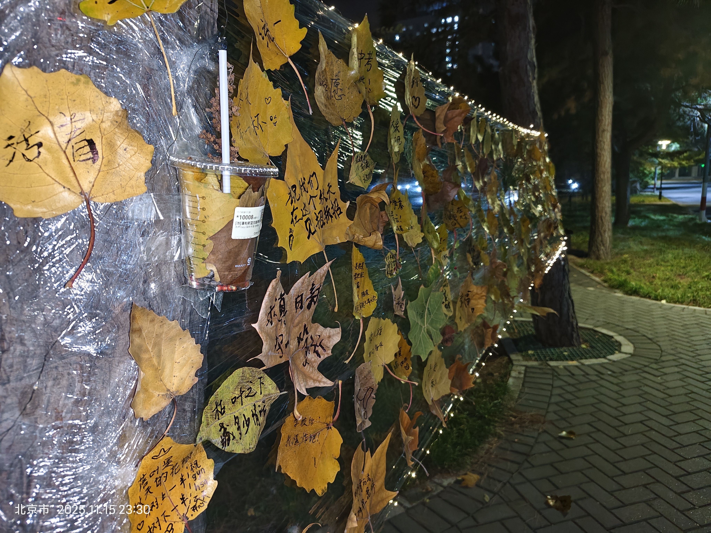
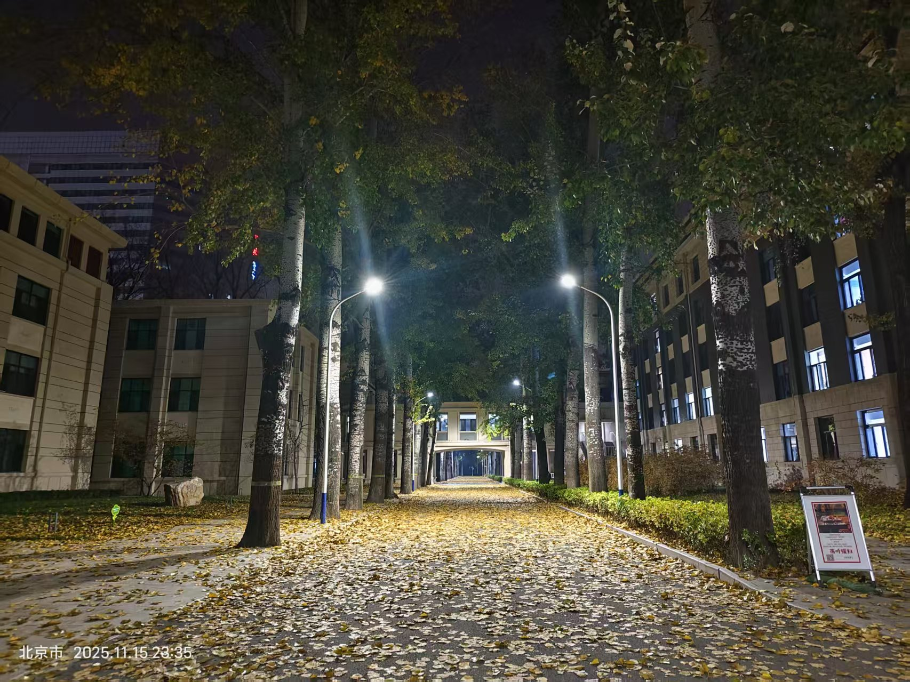
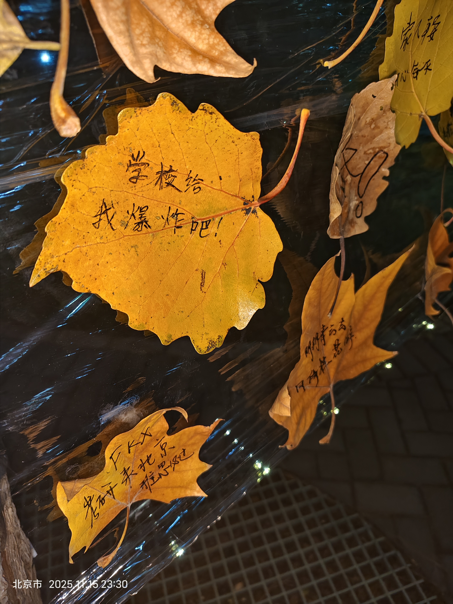
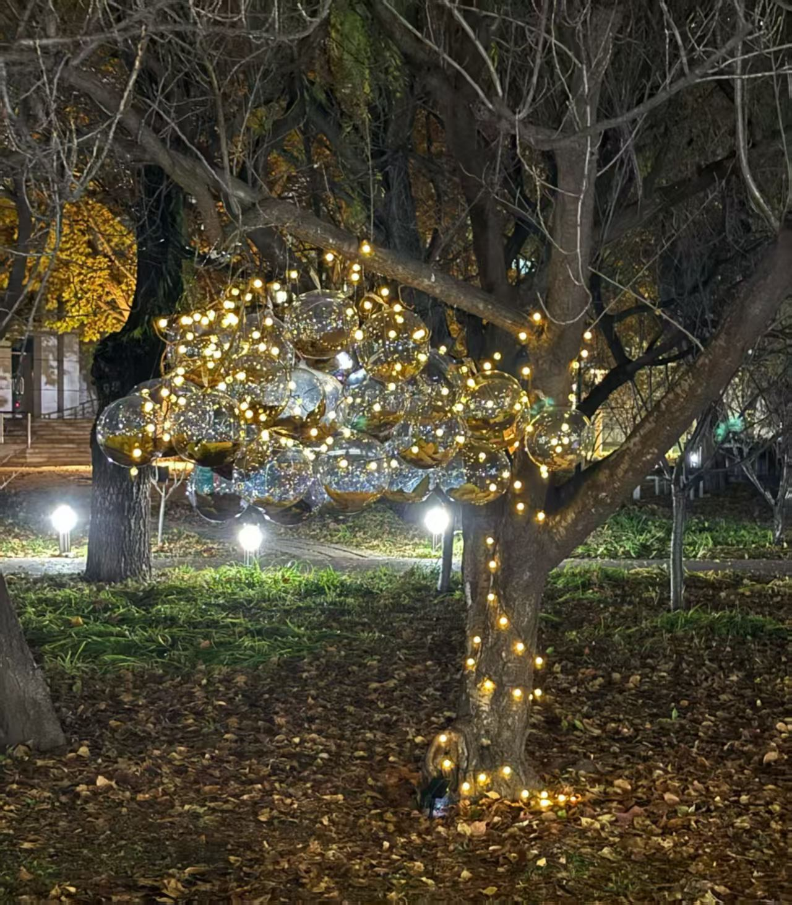

现在是2025年11月16日凌晨00：14。大概11点半晚上从主楼出来，在主南门口看到了同学们精心搭建的落叶墙，我在这里停驻很久，看着同学们用一片片黄叶写下一条条寄语，或是给自己的勉励，或是对别人的祝福，突然使我很有感触，想要写一些文字出来。

成长就是慢慢接受孤独。
分流进入计算机学院已经过了两个半月，在这个以内卷而远近闻名的专业中，我已经很久没有像今天这样心无杂念的静静的站一会儿了。站在用片片黄叶铺出来的小墙，我不禁感到好奇：究竟是怎样有趣的，优雅的，如此富有想象力的灵魂才能想出来这样的点子，给同学们一个机会，用秋天的触手推开心上的大门？
时光飞逝，转眼间已是秋末。黄澄澄的枫叶铺满了大道和阡陌。树上的叶子本不属于人间，它生长在蓝天白云清风雨露的怀抱中。它是天空的信使，来到人间传递秋天的色彩。我俯身捡起一片，看清了它背上绵延的经络，想到了它从一个小小的叶芽，舒展成一片叶子迎风摇曳，最后来到我的手中，诉说着时间的故事。我想起了刚刚进入北航的时候，也是这样一个风清气爽的时节。眨眼间，一年的日子在我手上匆匆逝去。我已不是最初那个书生意气的懵懂少年，现在的我早已被名为时间的利刃磨平了棱角，只能在时光洪流的裹挟下踉踉跄跄地被推着走。

我曾说，我是星空和深夜的诗人。在夜幕降临的片刻，我总是格外有灵感。每天从主楼或三号楼出来的时候，都已临近深夜。不知从何时开始，我习惯了熬夜，习惯了用黑夜来弥补白天的遗憾。我身边的人也都在熬夜，试图用凌晨的一点努力填平白天空虚的账本。我尝试着改变，却不知从何改变，巨大的压力让我一点点麻木。进入大二以来，课程压力愈发繁重，还有许许多多不得不处理的琐事。现在的我还在为了计组的实验而忙的焦头烂额。我试图停下来歇一歇，但是我又不敢放慢前行的脚步。
看着同学们写下的便签，我突然意识到并非我一人独困在矛盾的挣扎的生活中，只是我们都把自己的外壳伪装得五彩斑斓。我看到了大四的学长学姐为毕设焦头烂额，看到了大一的学弟学妹为数分的期中考试莫名紧张，还有和我同年级的同学在保研和排名中苦苦挣扎。原来我们都一样，都在精致的外壳下为一地鸡毛蒜皮而发愁。

图1: 🤫小点声！
图2: 树叶飞起来!
常有大一的学弟学妹问我上了大学觉得压力大，很焦虑。我不是个擅长安慰别人的人，只能告诉他们说：没关系，我们都是这么过来的。确实，相似的烦恼我也经历过，而且我现在仍然在经历着。大一的时候我也为数分高代头疼，为做不出来的程设题目崩溃到深夜。上了大二以后，计组实验难度飙升，Java代码动辄几千行，物理离散概统作业堆成山。果然人无法同时拥有青春和对青春的感受，就像我在大一的时候永远也无法做到真正理解学长学姐给我的安慰。我时常安慰别人不必焦虑，可自己却深深陷在焦虑的沼泽中无法自拔。
图3: 开心最重要
图3: 一株香草
大一的时候我幻想着自己能够在未来的大学生活中大放异彩。现在我觉得平安喜乐就是最如意的事情。身在六系，即使不能够保研，我认为也没有什么无法接受的。到底是什么让我的心态发生如此之大的转变呢？我也不知道，可能是时间吧。曾读到过这样一句话：少年意气是不可再生之物，时间以一种近乎讽刺的方式，完成了一个理想主义者的无声消解。但我并不认为时间会消解我心中的理想，只是这个理想随着我的阅历的增加更加现实。我们总是要活在现实中的。所以好好生活，开心最重要。如果让我重新选择一次，我还是会选六系。在这里我痛苦着，我挣扎着，可我也在痛苦的挣扎中拼命地生长着。墙上的那一株香草格外引人注目，什么都没有写，却向我们疯狂地展示着它蓬勃的生命力。
此刻我的耳机里，仍然是那段熟悉的旋律。我用尽全身的力气，才登上现在这个高度。我不愿放弃，不愿让过去二十年的努力停在某一刻的动摇之中。我会继续走下去，即使生活也并不顺利。美好幸福的瞬间本就是少数，正是生活中的崎岖坎坷，才让这幸福的瞬间愈显珍贵。

当我转过身来，看到晨读园中这一树花灯时，不禁为它的绚丽耀眼而赞叹。生活是一条长路，路边总会有绚丽的碎片，向前走的时候也不要忘记翻开自己的背包，看看被我们遗忘的美丽的点滴。
感谢伟大的摄影师供图。